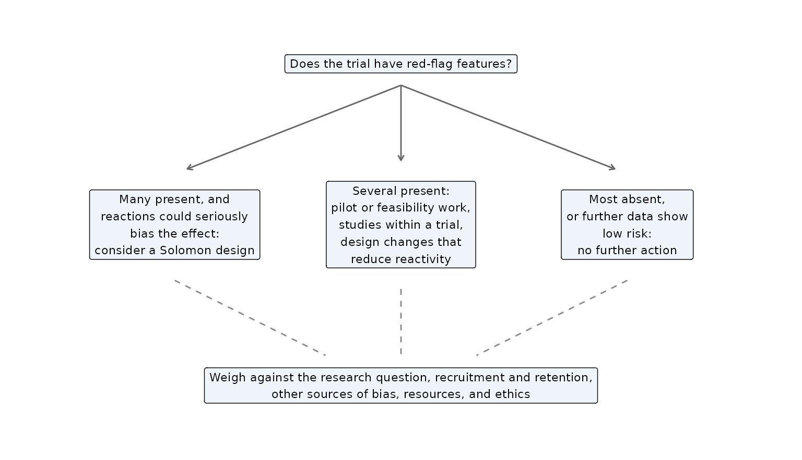

Should I Use a Solomon Design?
Source:vignettes/articles/should-i-use-a-solomon-design.Rmd
should-i-use-a-solomon-design.RmdA Solomon four-group design answers one question that a pretest-posttest trial cannot: does taking the pretest change the effect of the treatment? This article helps you decide whether that question is worth the design’s cost. Each recommendation is traced to a source. Where a point is solomonR’s own synthesis, it says so.
What the design protects against
Solomon (1949) proposed the extra groups because a pretest can interact with the treatment. It can change how participants attend to the treatment or how they receive it (p. 141). In his own demonstration, the pretest reduced the effect of a spelling lesson, so an ordinary two-group design would have underrated the lesson (p. 145).
- External validity. Campbell and Stanley (1963/1966) treated this interaction of testing and treatment as a threat to external validity, first presented by Solomon (p. 18).
- When it matters. How much it matters depends on whether pretests are part of the setting the results should generalize to. They expected little harm in classrooms where testing is routine and more in attitude research, where pretests introduce unusual content (p. 18).
- What the design determines. The Solomon design determines both the main effect of testing and its interaction with the treatment (p. 25).
The design earns its cost only if sensitization is plausible. Sawilowsky and Markman (1990b) laid out four possible outcomes: a treatment effect with or without pretest sensitization, and no treatment effect with or without it. When no sensitization is expected, they argued, the Solomon design has no advantage over a two-group design (p. 424).
How often sensitization occurs
The evidence suggests that sensitization is uncommon but not negligible.
- Willson and Putnam (1982). Their meta-analysis of 32 studies found that pretesting raised posttest scores by about a fifth of a standard deviation on average. The evidence for a pretest-by-treatment interaction was weak.
- McCambridge et al. (2011). Their review of Solomon studies of behavior change found sparse and inconsistent evidence of pretest effects, from too few studies to settle the question.
Sensitization can still change a study’s conclusions:
-
Kvalem et al. (1996). In a sex-education trial,
condom use differed between intervention and control students who had
been pretested (70% against 51%). It did not differ among students who
had not been pretested (43% against 52%; p. 42; see
kvalem1996). -
El Karkri et al. (2025a). Their classroom study
reported a significant Pretest x Treatment interaction (pp. 11–12; see
elkarkri2025a).
When to worry
The MERIT study (French et al., 2021a, 2021b) developed recommendations for bias from reactions to measurement in trials. Its “red flag” features mark trials at higher risk (French et al., 2021b, Table 4, p. 24). Among them:
- Participants. Participants selected on their motivation to take part, restrictive eligibility criteria, or more highly educated participants.
- Outcomes. Participants aware of the outcome of interest; outcomes focused on behavior or anxiety; outcomes with strong social norms.
-
Measurement. Measurement that is:
- repeated, or followed up soon after the pretest;
- self-reported, or collected specifically for the study;
- burdensome or complex;
- framed around goals;
- different across trial arms;
- disclosed to participants;
- closely similar to the intervention’s behavior change techniques.
-
Intervention and context.
- Behavioral or self-monitoring components, or a lack of blinding to arm.
- Process measures of the intervention’s mechanisms, or process data collected before or during outcome assessment.
- A laboratory setting.
MERIT’s Recommendation 7 asks whether these concerns warrant further action. The options run from none to a Solomon design (French et al., 2021b, p. 30):

Adapted from Figure 3 of French, D. P., Miles, L. M., Elbourne, D., Farmer, A., Gulliford, M., Locock, L., Sutton, S., McCambridge, J., & MERIT Collaborative Group (2021b), “Reducing bias in trials from reactions to measurement: The MERIT study including developmental work and expert workshop,” Health Technology Assessment, 25(55), NIHR Journals Library, https://doi.org/10.3310/hta25550, p. 31. The original figure first appeared in French et al. (2021a). It is licensed under CC BY 4.0 (https://creativecommons.org/licenses/by/4.0/). Changes: redrawn, wording condensed, examples and color coding omitted.
MERIT’s report is cautious about the Solomon design itself. It is “likely” warranted only when several indicators suggest measurement reactivity is a major concern (French et al., 2021b, p. 32). Its costs are the logistics of four arms, a larger sample, and a more complex analysis. The report also suggests an alternative: a large simple trial with no baseline measurement, relying on randomization for the equivalence of the arms (p. 32). That is Campbell and Stanley’s (1963/1966) Design 6, which they considered “greatly underused” and, for many purposes, a better investment than the Solomon design (p. 26).
What it costs
The Solomon design asks more of the sample than a two-group trial
does. The sensitization contrast compares two treatment effects, so its
estimate is noisier than either one. plan_solomon() shows
the consequence. The comparison assumes a treatment effect of 0.4
standard deviations in the unpretested groups, a pretest–posttest
correlation of 0.5, 80% power, and a two-sided alpha of .05:
| Question | Participants per group | Total |
|---|---|---|
| Is there a treatment effect of 0.4 SD (averaged over pretesting)? | 44 | 176 |
| Does the pretest change that effect by 0.4 SD? | 173 | 692 |
Detecting sensitization as large as the treatment effect takes about 4 times as many participants as detecting the treatment effect. The article “Planning a Solomon Study” explains the calculation and gives planning values from the literature.
Deciding
solomonR’s synthesis of the sources above: a Solomon design is worth considering when all three of these hold.
- Sensitization is plausible. The pretest is reactive for your participants, measures, and setting (the MERIT red flags).
- You need the answer. Whether the pretest changes the effect matters for your conclusions or for later studies. It is not just a nuisance you could design away.
-
You can afford the sample to estimate sensitization
with useful precision (
plan_solomon()).
If sensitization is unlikely:
- a pretest-posttest trial analyzed with the pretest as a covariate; or
- a posttest-only randomized trial (Campbell & Stanley’s Design 6) answers the treatment question at lower cost.
If sensitization is possible but you cannot afford a Solomon design:
- MERIT’s intermediate options are pilot or feasibility work, a study within a trial, and design changes that make the measurement less reactive (French et al., 2021b, p. 30);
- a large trial without baseline measurement is another (p. 32).
If you run a Solomon design, decide before the
analysis how sensitization will be judged, and report it as the MERIT
recommendations ask. report_solomon() includes a design
statement for this. The contemporary analysis is in
vignette("glm-solomon"), and the historical procedures are
in “A History of the Solomon Design and Its Analysis”.
All works cited in solomonR are listed, with notes on how the package uses them, on the References page.
References
Campbell, D. T., & Stanley, J. C. (1966). Experimental and quasi-experimental designs for research. Rand McNally. (Original work published 1963)
El Karkri, M., Quesada, A., & Romero-Ariza, M. (2025a). The dual impact of pretest sensitisation and the cognitive acceleration through science education programme in the Solomon four-group design. Brain Sciences, 16(1), Article 64. https://doi.org/10.3390/brainsci16010064
French, D. P., Miles, L. M., Elbourne, D., Farmer, A., Gulliford, M., Locock, L., Sutton, S., McCambridge, J., & MERIT Collaborative Group. (2021a). Reducing bias in trials due to reactions to measurement: Experts produced recommendations informed by evidence. Journal of Clinical Epidemiology, 139, 130–139. https://doi.org/10.1016/j.jclinepi.2021.06.028
French, D. P., Miles, L. M., Elbourne, D., Farmer, A., Gulliford, M., Locock, L., Sutton, S., McCambridge, J., & MERIT Collaborative Group. (2021b). Reducing bias in trials from reactions to measurement: The MERIT study including developmental work and expert workshop. Health Technology Assessment, 25(55), 1–72. https://doi.org/10.3310/hta25550
Kvalem, I. L., Sundet, J. M., Rivø, K. I., Eilertsen, D. E., & Bakketeig, L. S. (1996). The effect of sex education on adolescents’ use of condoms: Applying the Solomon four-group design. Health Education Quarterly, 23(1), 34–47. https://doi.org/10.1177/109019819602300103
McCambridge, J., Butor-Bhavsar, K., Witton, J., & Elbourne, D. (2011). Can research assessments themselves cause bias in behaviour change trials? A systematic review of evidence from Solomon 4-group studies. PLoS ONE, 6(10), Article e25223. https://doi.org/10.1371/journal.pone.0025223
Sawilowsky, S. S., & Markman, B. S. (1990b). Rejoinder to Braver and Walton Braver. Perceptual and Motor Skills, 71(2), 424–426. https://doi.org/10.2466/pms.1990.71.2.424
Solomon, R. L. (1949). An extension of control group design. Psychological Bulletin, 46(2), 137–150. https://doi.org/10.1037/h0062958
Willson, V. L., & Putnam, R. R. (1982). A meta-analysis of pretest sensitization effects in experimental design. American Educational Research Journal, 19(2), 249–258. https://doi.org/10.3102/00028312019002249